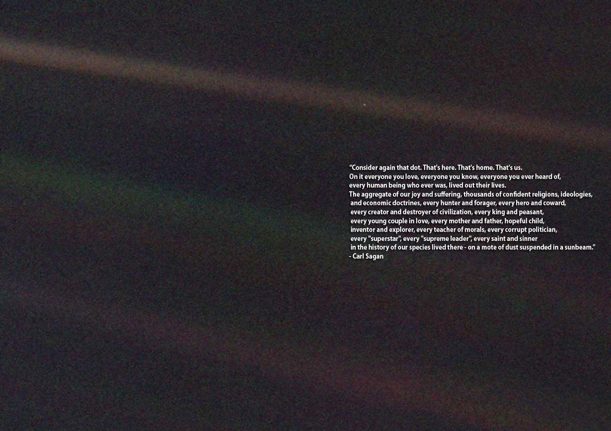

怀远人
这是特殊的一周。
9 月 15 日，卡西尼-惠更斯号探测器就将坠入土星大气层——或者说卡西尼号，因为惠更斯号早已于 2005 年在土卫六（Titan）上着陆。一个陪伴了我整个童年的英雄即将离去。
卡西尼号于 1997 年在卡纳维拉尔角航天基地第 40 号发射台升空，至今刚好 20 年。其升空之时我尚未出世，而如今我已有能力回顾它的整个旅程、并从中获得一二感动了。经过数次重力助推，卡西尼号在发射 7 年后抵达土星，随即展开为期四年的原定任务。详细情况无需多说，这里只提最令人激动之一事。在对土卫二（Enceladus）的观测中，卡西尼号发现了其南极地区存在羽状喷射物，随后的飞掠带来了振奋人心的消息——羽状物主要成分为冰晶，但其中包含有复杂的碳氢化合物，暗示着土卫二冰层之下孕育着一个可供生命发展的原始环境。这是何等的激动人心！人类还在为自己在宇宙中是否孤独而喋喋不休的时候，身边就已经出现了可能孕有原始生命的环境（能以光分来计算的距离，在空间尺度上确实可称身边）。尽管存在智慧生命的可能性很低，但在别的星球上发现能进行新陈代谢的物体，已足够震撼。人类仰望星空已有数万年，当终于遇到可称为同类的事物时，心情该有多么复杂。

2008 年，卡西尼号的既定任务完成之后，燃料仍然充足，仪器仍然良好，团队决定延长其生命至 2010 年。两年过后，卡西尼号状态仍然良好，于是任务再次延长，直至如今。
神龟虽寿，犹有竟时。卡西尼号的旅程终不能永久延续下去，到了告别的时候了。在发射之时，地球上无一人能想到土星附近有可供生命存在的环境，因此卡西尼号并未接受任何消毒措施。而如今，土卫二已变得如此珍贵，人类不能冒任何污染其原有环境的风险。因此，卡西尼号不能等待自然死亡，成为一个绕土星旋转的游魂，而只能主动选择壮烈地死去。在它还能控制自己的时候，它将面向土星，一头扎进这个陪伴了自己 13 年的气态巨人怀抱里，化为一颗火流星，消失在它浓厚的大气层中。而直到它解体前的最后一刻，卡西尼号都会朝着地球——家的方向，传输探测到的关于土星大气的任何数据。在最后一场战斗中，倒在最后一颗子弹下。
天文究竟能带给我什么呢？它是如此宏大，如此瑰丽，如此令人恐惧，如此让人沉寂。任何描述性的词句总会让人觉得词不达意，无法表达出心中所感。所以让我用卡尔·萨根的一段话作结吧。这张照片是由旅行者一号于 1990 年在 64 亿千米之外拍摄的一张地球照片，我们所熟悉的那颗美丽的蓝色星球在这张照片上，不过是仅有一个像素的暗淡光点。卡尔·萨根受此启发，写出了《Pale Blue Dot》，这便是书中的一段话。原文已在图上，笔拙不再翻译了。

最后，送上 NASA 冯·卡门系列讲座之卡西尼号：去往土星的伟大航程，b 站在线，中英双字，一个小时的讲座，值得一看。